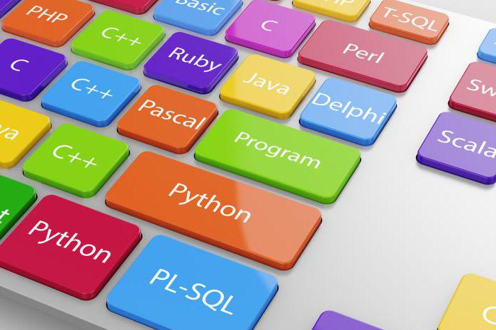

Языки программирования

Список языков программирования (ЯП) настолько широк и многообразен, что полностью выкладывать его - задача практически невыполнимая.
Среди всех языков можно выделить три основные подгруппы:
- Машинные (низкоуровневые ЯП)
- Машинно-ориентированные (ассемблеры)
- Машинно-независимые (ЯП высокого уровня)
- JavaScript
- Java
- Python
- Ruby
- PHP
- C++
- C#
- C
- Golang
- Scala
Этот список языков программирования далеко не полный, однако это наиболее востребованные языки, знание которых могут потребовать у программиста при устройстве на работу. Все они являются языками программирования высокого уровня.
Области применения языков программирования:
- Научные вычисления - C++, FORTRAN, Java
- Системное программирование - C++, Java
- Обработка информации - C++, COBOL, Java
- Искуственный интеллект (ИИ) - LISP, Prolog
- Издательская деятельность - Postscript, TeX
- Удаленная обработка информации - Perl, PHP, Java, C++
- Описание документов - HTML, XML
С течением времени одни языки развивались, приобретали новые черты и остались востребованы, другие утратили свою актуальность и сегодня представляют в лучшем случае чисто теоретический интерес. В значительной степени это связано с такими факторами, как:
- Наличие среды программирования, поддерживающей разработку приложений на конкретном языке программирования
- Удобство сопровождения и тестирования программ
- Стоимость разработки с применением конкретного языка программирования
- Четкость и ортогональность конструкций языка
- Применение объектно-ориентированного подхода